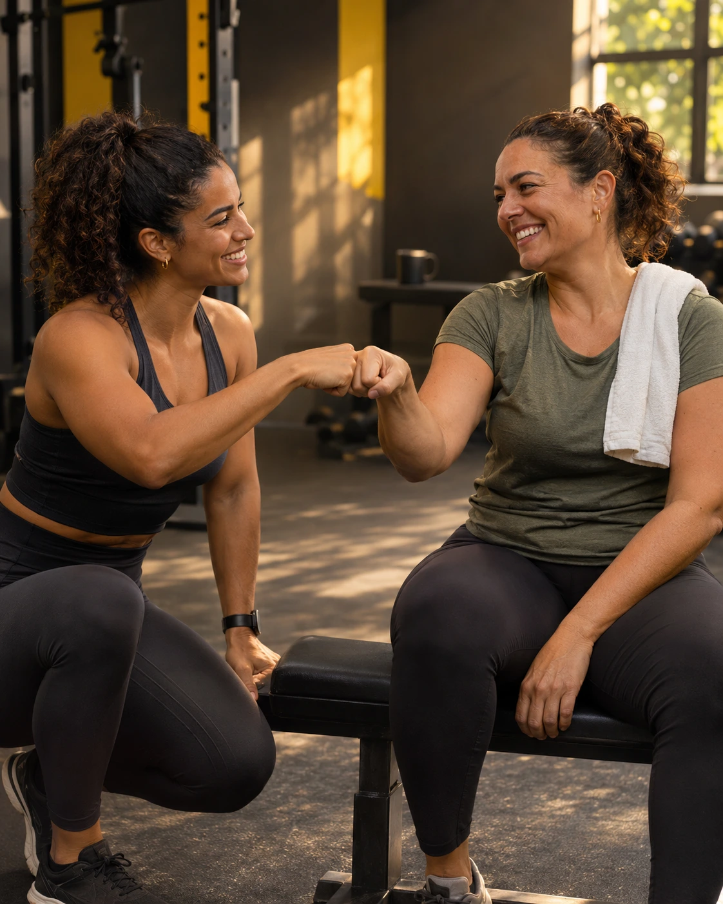
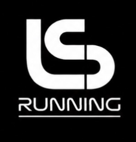

MUSCULAÇÃO
Trabalhe força e evolução com orientação e exercícios voltados para o seu objetivo.
TREINAMENTO PERSONALIZADO · SANTOS, SP
Você não é só mais um aluno.
Musculação e funcional com atenção de verdade,
em grupos de até 6 pessoas.
UM JEITO MAIS PRÓXIMO DE TREINAR
No LS Studio Santos, cada aluno tem espaço para ser acompanhado. Nosso treinamento integrado une musculação e funcional em pequenos grupos, com foco no seu objetivo.
É sobre treinar com orientação, criar uma rotina e se sentir parte de um ambiente que acolhe você.
Por dentro do LS Studio ↗DO SEU JEITO. NO SEU RITMO.
Força e movimento se encontram em um treinamento integrado, pensado para o que você quer alcançar.
Trabalhe força e evolução com orientação e exercícios voltados para o seu objetivo.
Movimentos que desafiam o corpo e fazem parte de uma rotina de treino mais completa.
Até 6 pessoas por sessão. Grupos reduzidos para manter a atenção em cada aluno.
MAIS QUE UM LUGAR PARA TREINAR
Um ambiente acolhedor faz diferença na sua rotina. Aqui, cada aluno é especial — do primeiro treino ao café depois da sessão.

LS RUNNING · SANTOS · DESDE 2017
Juntos quebramos barreiras.
A vertente de corrida do LS reúne assessoria esportiva e run club. Um convite para colocar o corpo em movimento e compartilhar o caminho com quem também escolheu correr.

COLOQUE VOCÊ NA SUA AGENDA
Treinos no Studio apenas com horário marcado.
Fale com a equipe para consultar a disponibilidade.
SEGUNDA A SEXTA
SEU BENEFÍCIO TAMBÉM TREINA AQUI
TE ESPERAMOS NA VILA BELMIRO
ANTES DO PRIMEIRO TREINO
Sim. Os treinos do Studio acontecem apenas com horário marcado. Entre em contato pelo WhatsApp para consultar horários e agendar.
O formato small group reúne até 6 pessoas por sessão, mantendo o foco em cada aluno.
Aceitamos Wellhub no plano Silver+ e TotalPass no plano TP3. Consulte a equipe para confirmar as condições e o agendamento pelo seu benefício.
Fale com a equipe pelo WhatsApp ou acompanhe o @lsrunning013 para conhecer a assessoria esportiva, os treinos e o run club.